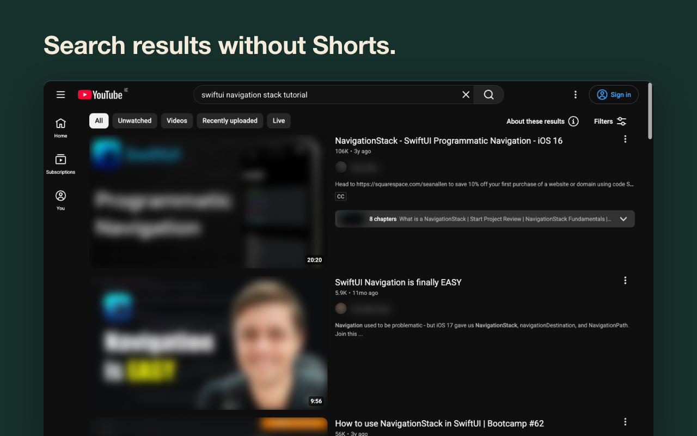

Hide YouTube Shorts, the home feed and recommendations
Opened YouTube for one video and looked up an hour later? Errand keeps search, your subscriptions and the video, and removes the parts built to keep you scrolling.
Free and open source. No account, no analytics, no network requests.
What changes on YouTube
- Home page
- Instead of the feed, one question: "What are you here for?" Type it and you get search results. Or make Home open Subscriptions, Watch later or the usual feed.
- Shorts
- Hidden on home, search, subscriptions, channel pages and the sidebar. Shorts links open in the normal player, or don't open at all.
- Recommendations
- No column next to the video. "Show recommendations" reveals it after 10 seconds, long enough to change your mind.
- End of a video
- No autoplay, no wall of thumbnails. Errand asks if you found what you came for and offers to close the tab.
- Comments, Mixes, Trending
- Comments sit behind a button. Mixes and Trending are hidden. Optional: live chat, the bell, view, like and subscriber counts.
- Strict mode
- Pick the hours, say weekdays 9 to 6. The "show" buttons disappear for that time.

If YouTube changes something, you'll know
Most extensions like this break the same way: YouTube changes its layout and Shorts creep back. Errand checks the home page, search and video pages for anything it should be hiding. If something slipped through, the icon shows "!" and the menu says what.
It doesn't block requests, touch ads or change how videos load, which is what usually sets off YouTube's ad-blocker warning.
Questions
Is it free?
Yes. The code is on GitHub.
What data does it collect?
None. Settings and the weekly count stay in your browser. Privacy policy.
Does it block ads?
No. Use uBlock Origin for that; they work together.
Brave, Vivaldi, Yandex Browser?
Install it from the Chrome Web Store.
Phone?
Not yet.